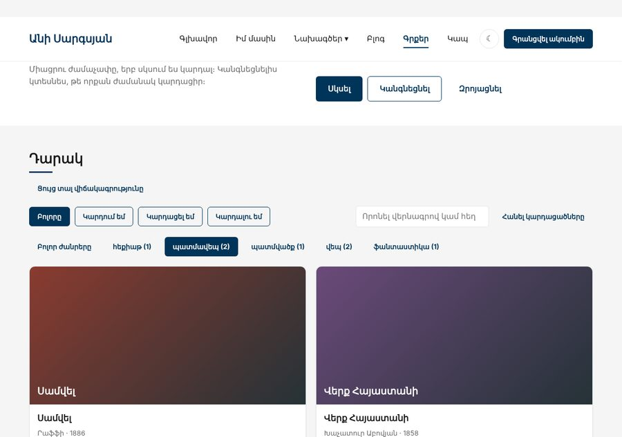

Տնային աշխատանք · JS Դաս 23 · մինի-նախագիծ
Վերջին քայլը մինչև ամփոփումը․ ժանրերի կոճակները կառուցվում են դարակից Set-ով և քանակներով Map-ով, որոնումը քեշավորվում է, ֆորման ստուգում է ValidationError-ով, իսկ փակույթները բացատրում են debounce-ը և once-ը։
Դաս 01–23․ փակույթներ, սեփական սխալների դասեր, instanceof, Set, Map, անփոփոխ թարմացումներ, Object.freeze։

Աշխատիր քո կայքում (կամ նախորդ դասի օրինակում)։ CSS-ը տրված է, որ կենտրոնանաս JS-ի վրա․ HTML/CSS-ը արդեն գիտես։
starter/pages/books.html — «Գրքեր» էջի markup-ը (JS չկա, միայն <script>-ները)get genres()՝ [...new Set(books.map(b => b.genre))]get genreCounts()՝ Map․ ժանր → քանակrenderGenres՝ «պատմավեպ (2)» կոճակներ, Shelf.setGenreget genreCounts() {
const counts = new Map();
this.#books.forEach(b => counts.set(b.genre, (counts.get(b.genre) ?? 0) + 1));
return counts;
}const searchCache = new Map()՝ բանալին հասցեն էerrors.js՝ ValidationError(field, message), ApiError(status, message) և get isServerErrorvalidateField-ը catch-ում ստուգում է instanceofthrow error․ ծրագրի սխալը չենք թաքցնումtry {
rule(input.value);
setError(input, "");
return true;
} catch (error) {
if (!(error instanceof ValidationError)) throw error;
setError(form.querySelector(`[name="${error.field}"]`), error.message);
return false;
}debounce-ի timer-ը և once-ի called-ը «հիշվում» ենonce՝ «Բարի ընթերցանություն» միայն առաջին «Սկսել»-իցShelf.add՝ [...this.#books, book], ոչ pushINITIAL_BOOKS՝ Object.freezepush և splice Shelf-ում չկան| Սխալ | Ինչպես ուղղել |
|---|---|
| Ժանրերի կոճակները կրկնվում են | Set-ից հետո spread՝ [...new Set(...)] |
Map-ի քանակը NaN է | Առաջին անգամ counts.get(...)-ը undefined է․ ?? 0 |
| catch-ը թաքցնում է տառասխալները | Ստուգիր instanceof ValidationError, մնացածը նետիր կրկին |
| Քեշը տալիս է հին արդյունք այլ limit-ի համար | Բանալին պիտի ներառի բոլոր պարամետրերը (ամբողջ հասցեն) |
Սրանք Դաս 23-ի տնային աշխատանքի կետերն են։ «մինի-նախագծում» նշվածները արդեն կատարել ես վերևի քայլերում, մնացածը կատարիր առանձին ֆայլերում։
createCounter(start), որը վերադարձնում է increment, decrement, reset և get value։ Ստեղծիր երկու անկախ հաշվիչ։once(fn) և ստուգիր, որ երկրորդ կանչը չի կատարում ֆունկցիան։ մինի-նախագծումmemoize(fn) և կիրառիր դանդաղ ֆունկցիայի վրա։ Ցույց տուր տարբերությունը console.time-ով։var-ով ցիկլը տալիս է 4, 4, 4։ Ուղղիր երկու տարբեր ձևով։ValidationError և NetworkError դասեր։ Ֆունկցիա, որը պատահականորեն նետում է մեկը, և catch, որը տարբերում է դրանք։ValidationError-ով։ մինի-նախագծումSet-ով։ Համեմատիր filter + indexOf տարբերակի հետ։ մինի-նախագծումSet-ով, ապրանքների կատեգորիաներից։ մինի-նախագծումMap-ով քեշ Դաս 21-ի էջավորմանը։ Ցույց տուր Console-ում՝ «քեշից» թե «սերվերից»։ մինի-նախագծումpush, splice կամ ուղիղ վերագրում — միայն map, filter և spread։Երբ բաժին 03-ի բոլոր կետերը նշված են, բացիր օրինակը և դրա կոդը example/js/-ում։ Դաս 18-ից օրինակը բացիր Live Server-ով։ Գտիր մեկ բան, որ դու արել ես այլ կերպ, և մտածիր՝ որն է ավելի հասկանալի և ինչու։ Քո լուծումը կարող է տարբերվել և լինել ճիշտ։